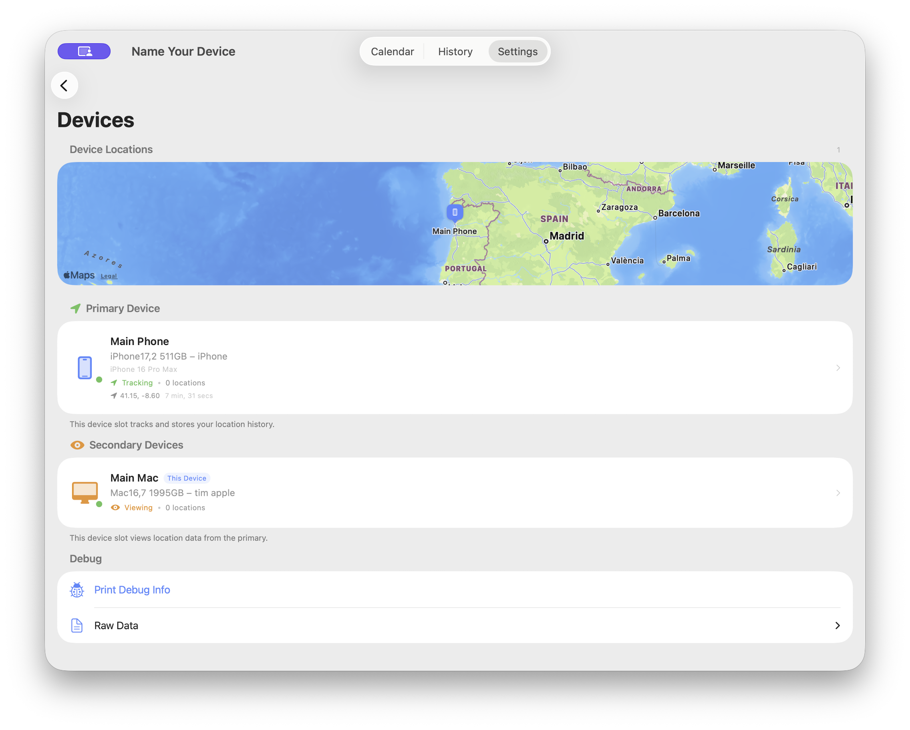

Multi-Device FAQ
Use Atlas Logged across all your Apple devices with seamless iCloud sync.

The Devices screen in Atlas Logged showing multi-device setup
How Multi-Device Works
Atlas Logged supports running on multiple devices simultaneously using iCloud sync. Your devices coordinate automatically to track your location efficiently while keeping all your data synchronized.
Key concept: One device acts as the Primary Device which populates your calendar, travel history, and all the main features. Secondary Devices can also track location data, but with less accuracy—useful for getting a general idea of where that device has been.
Primary vs Secondary Devices
Primary Device:
- Populates your calendar, travel history, and all main features
- Provides the most accurate continuous background location tracking
- Must be an iPhone (only iPhones support continuous background location)
- Shows a location arrow icon and "Tracking" status
- Only one device can be primary at a time
Secondary Devices:
- Can also track location data, but typically with less accuracy
- Useful for getting a general idea of where that device has been
- Can be iPhone, iPad, or Mac
- Show an eye icon and "Viewing" status
- Great for reviewing your travel history on a larger screen
Why the difference? iPads and Macs don't support continuous background location like iPhones do. They can still capture location when the app is active or during significant location changes, giving you some tracking data—just not as comprehensive as an iPhone.
Setting Up Multiple Devices
- Enable iCloud Sync - Go to Settings and turn on iCloud sync on all devices
- Sign in with the same Apple ID - All devices must use the same iCloud account
- Install Atlas Logged - Download the app on each device
- Devices appear automatically - Once sync is enabled, devices will show up in the Devices screen
Device Locations Map
The Devices screen shows a map with all your devices' last known locations. This helps you:
- See which device is currently tracking
- Verify your devices are syncing correctly
- Understand where each device was last active
Switching Primary Device
You can change which iPhone is the primary tracking device:
- Open Atlas Logged on the iPhone you want to make primary
- Go to Settings > Devices
- Tap on the device and select "Make Primary"
Note: iPads and Macs cannot be primary devices as they don't support continuous background location tracking. They can still track as secondary devices, but with less accuracy.
Privacy & Security
Your multi-device data remains private:
- All sync happens through your personal iCloud account
- Device metadata is encrypted by Apple's CloudKit
- We never see or have access to your device information
- Only devices signed into your Apple ID can access the data
For full details, see our Privacy Policy.
Troubleshooting
Device not appearing?
- Ensure iCloud sync is enabled on both devices
- Check that you're signed into the same Apple ID
- Try opening the app on both devices to trigger a sync
- Check your internet connection
Location not updating?
- Verify the primary device has location permissions set to "Always"
- Ensure the primary device has background app refresh enabled
- Check that the device isn't in Low Power Mode
Summary: Your primary iPhone handles the main tracking that populates your calendar and travel history. Secondary devices (iPads, Macs, or other iPhones) can also capture location data with less accuracy—useful for seeing where that device has been. All data syncs securely through iCloud with end-to-end encryption.
Download Atlas Logged
Start tracking your travels with complete privacy
Requires iOS 17.0 or later